UX DESIGN CASE STUDY
Nucleus EU
Overview
Nucleus EU is a payment terminal platform used by merchants across multiple European markets. Designed for busy environments where speed, accuracy, and reliability are critical, the product supports a wide variety of merchant types including retail, hospitality, beauty, and service businesses.
As the platform was being prepared for expansion into additional markets, the Nucleus product team approached my team for support. Despite being a strategically important product, Nucleus had received little dedicated UX attention and there was no shared understanding of the overall user experience.
Rather than immediately redesigning screens, I believed we first needed to understand the current state of the product, identify systemic UX issues, and align stakeholders around where improvements would deliver the greatest value.
THE CHALLENGE
A product growing without UX direction
The Nucleus product had evolved over time without a clear UX strategy.
Documentation was fragmented, there were inconsistencies across user flows, and knowledge about customer pain points was spread across multiple teams. Product managers, engineers, support teams, and designers all had valuable insights, but there was no structured way to bring them together.
The risk was that design effort would become focused on isolated UI fixes rather than addressing the underlying experience problems affecting merchants and users across the platform.
We needed a shared understanding of the experience before we could confidently define a future direction.
UX AUDIT
Understanding the experience before redesigning it
To create alignment, I initiated a cross-functional UX audit of the product.
Working with Product and Engineering, we identified fourteen critical user journeys that represented the highest-value areas of the merchant experience. These journeys were mapped into a collaborative FigJam workshop involving product owners, engineers, support specialists, UX researchers, and designers.
The goal wasn't to critique visual design. Instead, we focused on understanding how the product behaved from a user's perspective, surfacing friction points, recurring pain points, inconsistencies, and opportunities for improvement.
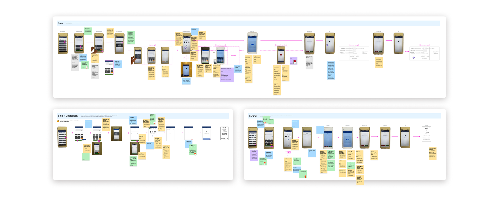
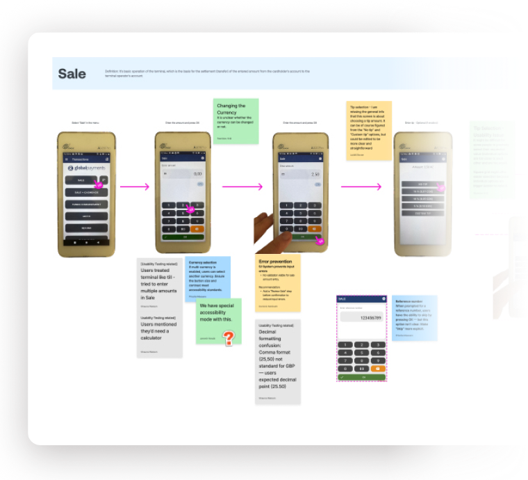
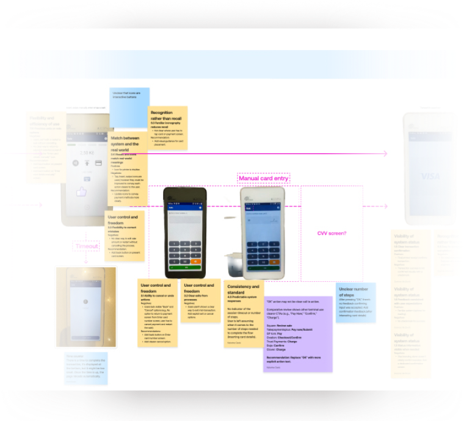
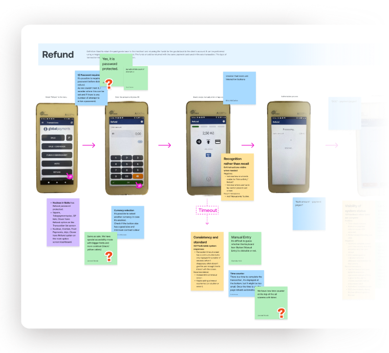
Alongside workshop contributions, we brought additional evidence from:
Usability testing
Heuristic evaluations
Competitive benchmarking
Flow Analysis
This created a decent picture for us of the current experience from multiple perspectives.
INSIGHT SYNTHESIS
Turning observations into strategic direction
Following the workshop, I analysed and synthesised all of the shared observations into a smaller set of recurring themes.
Rather than treating issues as isolated screen-level problems, I focused on identifying systemic patterns that appeared across multiple journeys.
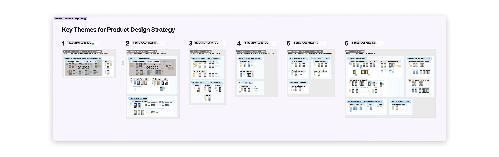
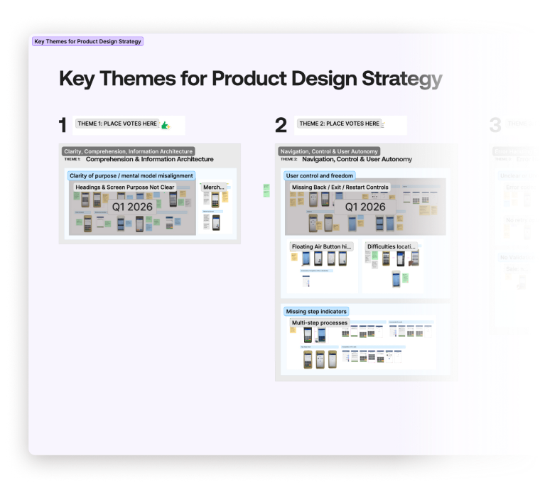
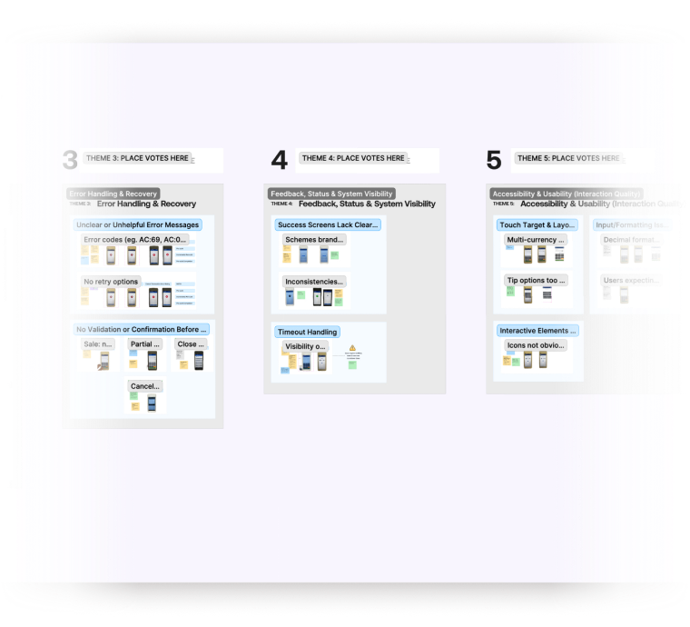
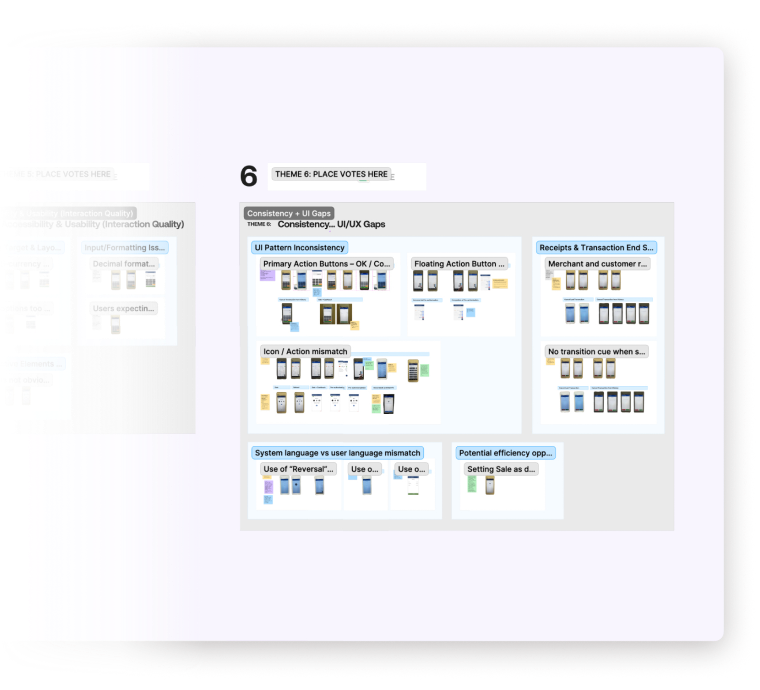
Several key themes emerged around:
Lack of clarity and guidance throughout flows
Navigation and user control limitations
Confusing payment terminology and industry jargon
Weak feedback and error recovery mechanisms
Accessibility and interaction issues
Inconsistencies across journeys
I then facilitated a prioritisation workshop with stakeholders to determine which themes would deliver the greatest value if addressed first, which helped to steer an important shift in thinking. Rather than discussing individual UI changes, conversations moved towards broader design objectives and customer outcomes.
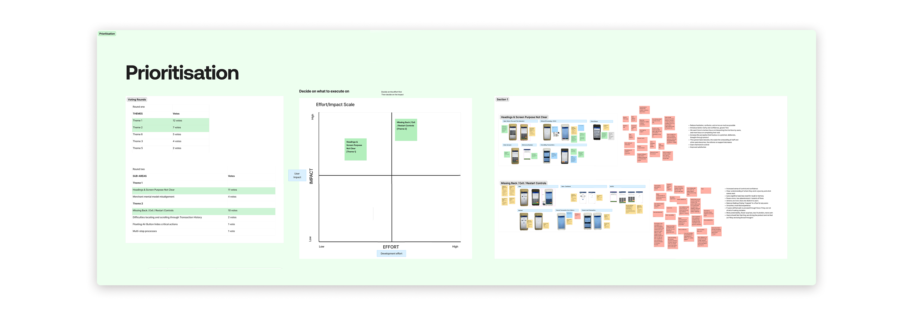
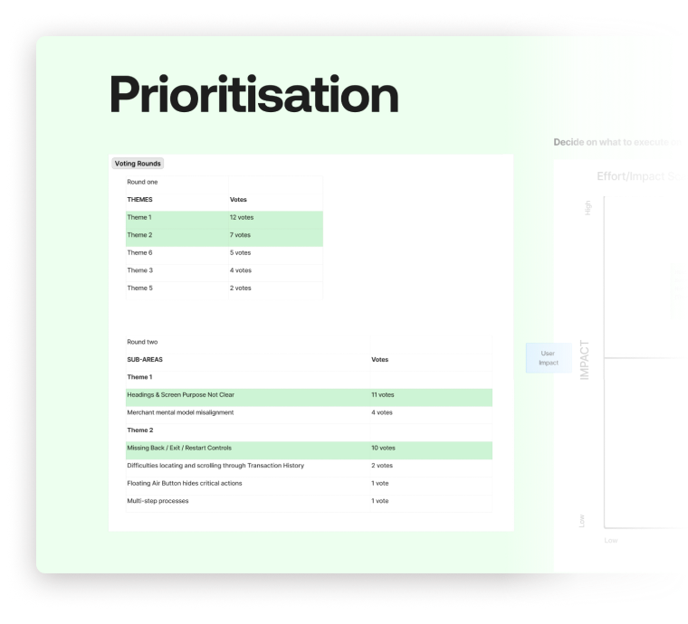
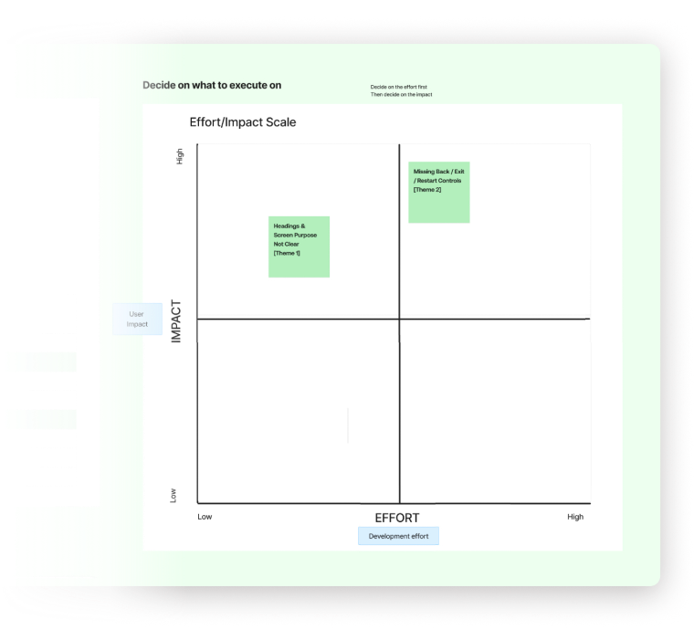
Product and Engineering stakeholders were able to see how UX could influence product direction rather than simply decorate interfaces.
The result was a shared UX strategy that established a clear vision for how the product should evolve.
DESIGN STRATEGY
Moving beyond isolated UX improvements
With alignment established, I created a Product Design Strategy to guide future design decisions for the Nucleus platform. The strategy intentionally focused on behaviours and outcomes rather than specific interface solutions.
Our core objective was:
To reduce friction, hesitation, and uncertainty by creating clearer flows, greater user control, more predictable behaviour, and better feedback throughout the product.
Importantly, the strategy wasn't simply a collection of UX recommendations. It established a shared rationale for why this direction was important, the value it would create for users, the product, and the wider business, and how we would recognise whether the strategy was succeeding.
The strategy provided several benefits:
A SHARED DIRECTION
It gave Product, Design, and Engineering a common lens through which to evaluate decisions and prioritise work. The strategy clearly articulated the outcomes we were working towards, helping teams move beyond discussions about individual screens and instead focus on the experience we wanted to create for users.
A FOCUS ON SYSTEMIC IMPROVEMENT
Rather than solving isolated usability issues, the team could focus on patterns that affected multiple journeys across the product. The strategy also defined the behaviours we wanted to encourage, such as moving through flows with less hesitation, having to rely less on memory etc. while identifying behaviours we wanted to minimise, such as abandoning flows due to confusion, guessing or avoiding features because they feel risky or unclear.
A FRAMEWORK FOR SCALABILITY
As Nucleus expands into additional markets, the strategy helps establish consistency and reduces the risk of fragmented experiences emerging over time. It also provides a set of success indicators that could be used to assess progress over time, including less hesitation and backtracking in key flows, fewer abandoned or restarted tasks, fewer “how do I....?” support requests etc.
A FOUNDATION FOR DESIGN MATURITY
The work also exposed a significant documentation gap. The live product, user guide, and design files had diverged considerably. One of the strategy's key recommendations was the creation of a centralised design library and user flow documentation, providing a single source of truth for future development.
The strategy also highlighted the conditions required for success, eg. – we must prioritise systemic solutions over one-off fixes, we must maintain consistency across flows not just screens, we must align with Product and Engineering on feasibility and scope etc.
Ultimately, the strategy helps position design as a collaborative and strategic function, demonstrating that UX can help shape product direction rather than simply deliver interface improvements.
DESIGN EVOLUTION
Designing for consistency, clarity and control
Using the prioritised themes as our guide, the team and I began exploring and iterating solutions across the highest-impact user journeys.
Instead of redesigning screens in isolation, we focused on creating more consistent interaction patterns that could improve usability across the wider platform.
Examples included:
Improved navigation and recovery patterns
Clearer page structure and flow guidance
More predictable user controls
Improved content and instructional messaging
Stronger feedback and confirmation mechanisms
Design reviews were conducted collaboratively with Product and Engineering throughout the process, ensuring solutions balanced customer needs with delivery feasibility.
UX RESEARCH
Validating direction and measuring impact
Once solutions had been designed, we partnered with the UX Research team to evaluate their effectiveness.
A comparative usability study was conducted using both the existing experience and redesigned concepts. Participants completed key payment terminal tasks including sales, refunds, transaction cancellations, and partial cancellations.
The results showed meaningful improvements across every measured usability metric.
Outcomes
Task success increased from 61% to 88%
Time on task improved by 16%
Error rates reduced by 46%
System Usability Scale (SUS) score increased to 88.8/100
The research also validated several of the design principles established during the strategy phase. Improved navigation, clearer guidance, and better feedback reduced cognitive load, increased confidence, and helped users recover from mistakes more effectively.
Importantly, the study also highlighted opportunities for future work, particularly around information architecture and payment terminology. This reinforced the value of treating UX as an ongoing strategic programme rather than a one-time redesign effort.
IMPACT
Establishing UX as a strategic partner
This project delivered more than a set of redesigned screens.
It established a UX strategy for a strategically important product, created cross-functional alignment around user experience priorities, and introduced a framework for making future design decisions.
By grounding decisions in research and focusing on systemic improvements rather than isolated fixes, we were able to demonstrate how design can contribute to product strategy, organisational alignment, and measurable business outcomes.
Most importantly, it helped shift conversations from "What screens should we change?" to:
"What experience are we trying to create?"